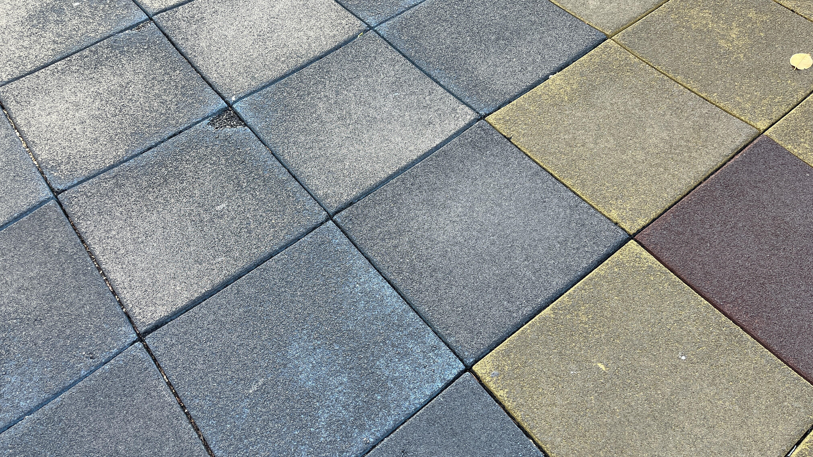
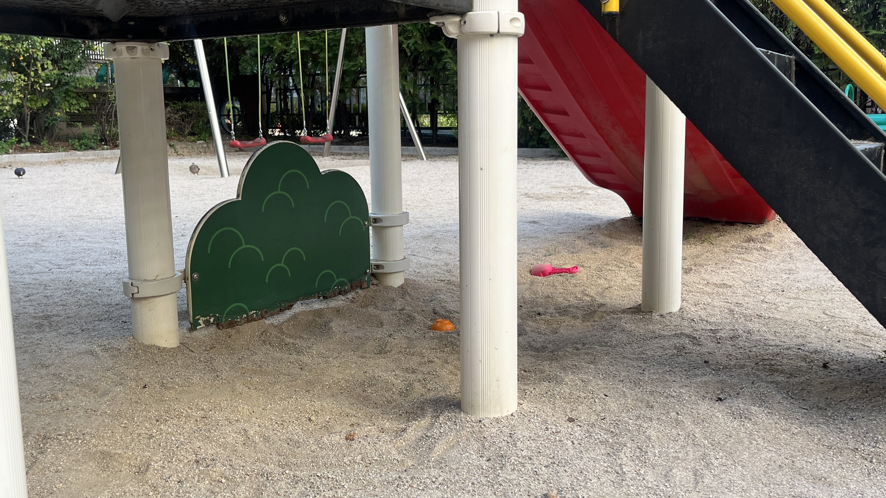
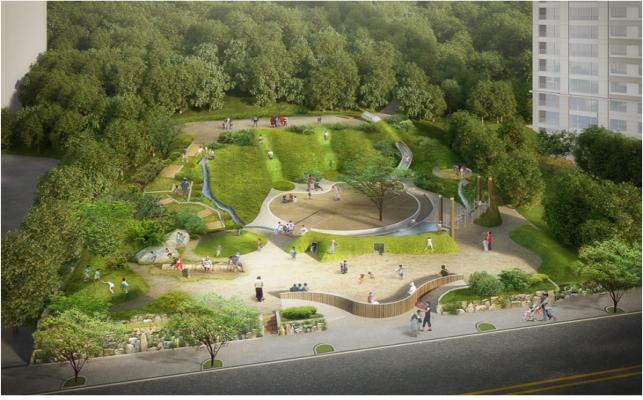
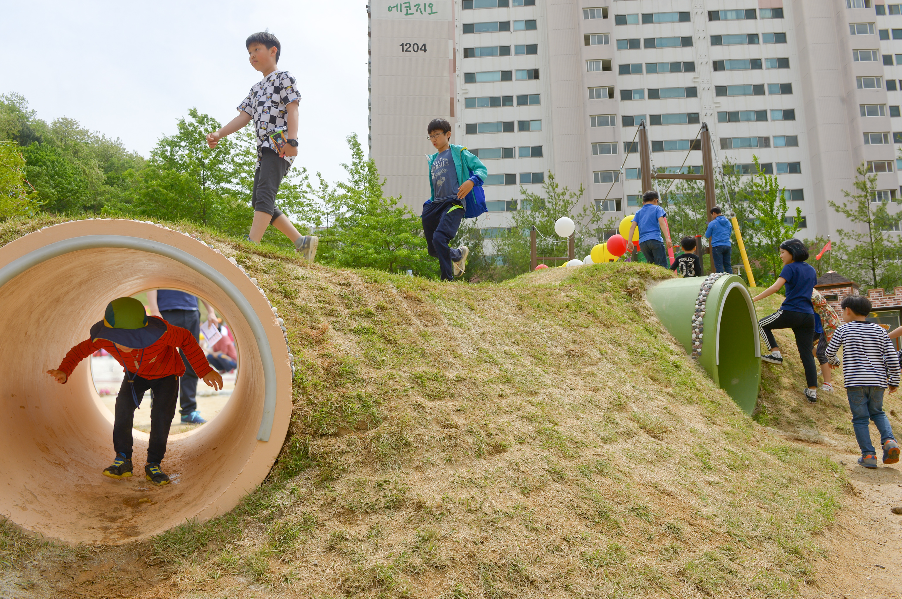

APARTMENT PLAYGROUND · VISUAL NEWSIS
놀이터의
시간.
기억 속 아파트 놀이터의
모습은 무엇인가.
모래바닥, 구름사다리, 시소와
빙글빙글 돌던 뺑뺑이.
수십 년이 흐른 지금
아파트 놀이터는 어떻게 달라졌을까.
2021 → 2023 · TWO TRENDS
같은 기간 출생아 수는 줄었지만
공동주택 어린이놀이터 수는 늘었다.
두 그래프는 단위와 기준이 다르다. 같은 기간의 변화이며, 인과관계를 의미하지 않는다.
놀이터의 변화
모래와 개별 놀이기구
모래바닥 위에 그네, 시소, 구름사다리, 회전놀이기구 등이 각각 놓인 형태가 일반적이었다.

준공 시기와 현재 놀이시설의 설치 시기는 다르다.
아파트 놀이터,
무엇이 달라졌을까?
타임라인에서 본 변화를 사진으로 비교해보세요.
바닥의 변화
바닥의 재료와 표면을 비교해보세요.


경계를 좌우로 드래그해 비교하세요.
사진은 각 변화의 사례를 비교한 것으로, 동일 장소의 시공 전·후를 뜻하지 않습니다.
1980s
1980년대 준공 단지모래 위에 놓인
철제 놀이기구

모래바닥과 철제 놀이기구의 흔적 곁에
새 조합놀이대가 함께 남아 있다.
시설은 교체·보수된다. 단지의 준공 시기가 현재 놀이시설의 설치 시기를 뜻하지는 않는다.
FROM PIECES TO ONE
놀이기구가 하나로
합쳐지기 시작했다.
조합놀이대에 담긴 기능을 따라가 본다.
흩어져 있던 놀이 기능이 하나의 구조물로
그네앞뒤로 흔들리는 놀이
+ 미끄럼틀위에서 아래로 내려오는 놀이
+ 오르기손과 발로 올라가는 놀이
+ 그물하나의 조합놀이대로


200801.27
놀이터에도
안전관리 기준이 생겼다.
2008년 어린이놀이시설 안전관리법이 시행되면서 기존 놀이터도 안전검사 대상에 포함됐다. 기준에 맞지 않는 놀이시설은 보수·교체되면서 오래된 아파트의 놀이터 모습도 달라졌다.
기존 시설에는 설치검사 이행을 위한 유예기간이 적용됐다.
어린이놀이시설 안전관리법 ↗
2000년대 후반
놀이터 특화가
뚜렷해졌다.


- 01대형 조합놀이대
- 02테마형 놀이터
- 03물놀이터
- 04실내놀이터
반포자이의 두 장면에서 테마와 물놀이 공간을 살펴본다.
2020s
이제 놀이터는
놀이기구만 놓는
공간이 아니다.
놀이를 둘러싼, 함께 머무는 공간
놀이공간의 중심에서
+ 물놀이 경험을 넓히고
+ 조경단지의 풍경과 이어지고
+ 숲자연을 곁에 두고
+ 산책걷는 길과 만나고
+ 휴식하나의 큰 공간이 된다
놀이를 둘러싼 공간.
물과 조경, 산책과 휴식이 이어지는 모습을 살펴본다.
단지별 특화 방향은 다르다.

노는 아이 곁에,
머무는 어른.

정자 / 벤치 / 평상
보호자가 머무르던 자리
놀이터와 함께 설계된 휴게공간
놀이와 휴식을 함께 설계한 자리보호자가 머무는 공간은 과거에도 있었다.
최근에는 규모와 구성 방식이 다양해지고,
조경과 함께 계획되는 사례가 나타나고 있다.
그런데,크고 화려한 놀이터가
아이에게 더 좋은 놀이터일까?
편해문 놀이터 디자이너
① 붙박이 놀이기구의 한계
미끄럼틀은 미끄러지고, 그네는 흔든다.
놀이기구는 놀이 방식을 어느 정도 정해준다.
기구에 마우스를 올려 움직임을 살펴보세요. 모바일에서는 가볍게 눌러보세요.
대표 동작을 보여주는 예시다. 아이들의 모든 놀이가 이 동작에 한정된다는 뜻은 아니다.
② 아이가 변화를 줄 수 있는 공간
모래, 흙, 언덕처럼 아이가 직접 선택하고
그날그날 다른 방식으로 활용할 수 있는 요소가 중요하다.
조감도 속 공간을 눌러 실제 놀이 모습을 살펴보세요.


놀이 위주의 놀이터가 만들어져야 하는데
놀이기구 위주의 놀이터가 만들어지고 있다.
PLAYING TOGETHER
③ 다른 아이와 만나는 경험
- 만나기
- 기다리기
- 제안하기
- 양보하기
- 협상하기
- 함께 놀기
다른 아이들과 만나고 관계를 조율하는 경험 역시
놀이의 일부다.
편해문 디자이너가 말하는 ‘소셜믹스’의 한 장면.
아파트 놀이터의 다음 질문
놀이터는 더 크고 다양해졌다.
이제 중요한 건 하나다.
아이들은 그곳에서
얼마나 자유롭게 놀 수 있을까.